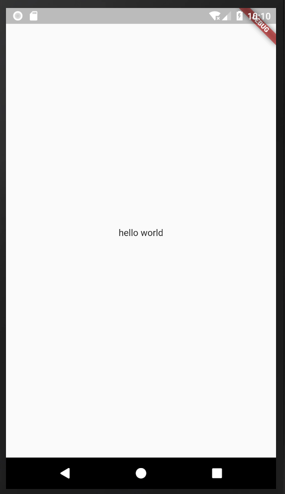
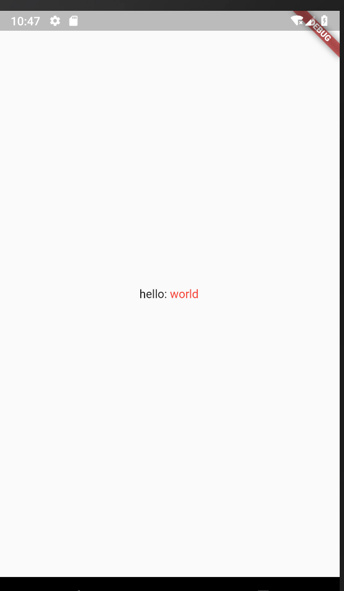

<!DOCTYPE html>
<html lang="en">

<head><meta name="generator" content="Hexo 3.9.0">
  <meta charset="utf-8">
    
  <meta name="viewport" content="width=device-width, initial-scale=1, maximum-scale=1">
  <title>
    flutter--hello world和文本组件Text、TextSpan |  MonkeyInWind
  </title>
  
  <link rel="shortcut icon" href="/favicon.ico">
  
  <link rel="stylesheet" href="/css/style.css">
  <script src="/js/pace.min.js"></script>

  

<script type="text/javascript">
(function(i,s,o,g,r,a,m){i['GoogleAnalyticsObject']=r;i[r]=i[r]||function(){
(i[r].q=i[r].q||[]).push(arguments)},i[r].l=1*new Date();a=s.createElement(o),
m=s.getElementsByTagName(o)[0];a.async=1;a.src=g;m.parentNode.insertBefore(a,m)
})(window,document,'script','//www.google-analytics.com/analytics.js','ga');

ga('create', 'UA-155359064-1', 'auto');
ga('send', 'pageview');

</script>


  

</head>

</html>

<body>
  <div id="app">
    <main class="content">
      <section class="outer">
  <article id="post-flutterTextWidget" class="article article-type-post" itemscope
  itemprop="blogPost" data-scroll-reveal>

  <div class="article-inner">
    
    <header class="article-header">
       
<h1 class="article-title sea-center" style="border-left:0" itemprop="name">
  flutter--hello world和文本组件Text、TextSpan
</h1>
  

    </header>
    

    
    <div class="article-meta">
      <a href="/post/flutterTextWidget/" class="article-date">
  <time datetime="2020-01-05T09:50:37.000Z" itemprop="datePublished">2020-01-05</time>
</a>
      
    </div>
    

    
    
    <div class="tocbot"></div>


    

    <div class="article-entry" itemprop="articleBody">
      


      

      
      <h1 id="Hello-World"><a href="#Hello-World" class="headerlink" title="Hello World"></a>Hello World</h1><p>代码的世界从<code>hello world</code>开始，flutter也一样。<br>创建一个项目，将<code>lib</code>文件夹下的<code>main.dart</code>改为如下代码：</p>
<a id="more"></a>
<figure class="highlight plain"><table><tr><td class="gutter"><pre><span class="line">1</span><br><span class="line">2</span><br><span class="line">3</span><br><span class="line">4</span><br><span class="line">5</span><br><span class="line">6</span><br><span class="line">7</span><br><span class="line">8</span><br><span class="line">9</span><br><span class="line">10</span><br><span class="line">11</span><br><span class="line">12</span><br><span class="line">13</span><br><span class="line">14</span><br><span class="line">15</span><br><span class="line">16</span><br><span class="line">17</span><br></pre></td><td class="code"><pre><span class="line">void main() =&gt; runApp(MyApp());</span><br><span class="line"></span><br><span class="line">class MyApp extends StatelessWidget &#123;</span><br><span class="line">  @override</span><br><span class="line">  Widget build(BuildContext context) &#123;</span><br><span class="line">    return MaterialApp(</span><br><span class="line">      title: &apos;Flutter Demo&apos;,</span><br><span class="line">      home: Scaffold(</span><br><span class="line">      body: new Center(</span><br><span class="line">        child: new Text(</span><br><span class="line">          &apos;hello world&apos;</span><br><span class="line">          )</span><br><span class="line">        )</span><br><span class="line">      )</span><br><span class="line">    );</span><br><span class="line">  &#125;</span><br><span class="line">&#125;</span><br></pre></td></tr></table></figure>

<p>跑起来<br><br><code>hello world</code>完成了。</p>
<p>先简单介绍两个组件</p>
<h3 id="1、Scaffold"><a href="#1、Scaffold" class="headerlink" title="1、Scaffold"></a>1、Scaffold</h3><p>打开任意一款app，顶部标题栏、侧边抽屉、底部导航等…，基本上都有这里边的一个或者几个，基于这个现状，material很贴心的提供了<code>scaffold</code>这个组件，相当于一个页面的骨架，可以把上边说的那些东西拼到里边。</p>
<h3 id="2、Center"><a href="#2、Center" class="headerlink" title="2、Center"></a>2、Center</h3><p>很简单的一句话，这个组件的子组件水平垂直居中。<br>这两个只是简单的介绍一下，以后再详细说，接下来是这篇笔记的主角。</p>
<h1 id="文本Widget"><a href="#文本Widget" class="headerlink" title="文本Widget"></a>文本Widget</h1><h2 id="一、Text"><a href="#一、Text" class="headerlink" title="一、Text"></a>一、Text</h2><p><code>hello world</code>这个demo里用过了，相当于<code>html</code>里边的<code>&lt;p&gt;&lt;/p&gt;</code>，但是又有所不同，都知道<code>p</code>标签独占一行，宽度如果没有限制则为父级宽度，<code>Text</code>也是独占一行，但是宽度为内容宽度，并且没有<code>width</code>属性。<br>看上边的demo，是不是感觉字体有点小，还想换个颜色，加个下划线…还有其他各种骚操作。<br>先看一下官网给出的Text</p>
<figure class="highlight plain"><table><tr><td class="gutter"><pre><span class="line">1</span><br><span class="line">2</span><br><span class="line">3</span><br><span class="line">4</span><br><span class="line">5</span><br><span class="line">6</span><br><span class="line">7</span><br><span class="line">8</span><br><span class="line">9</span><br><span class="line">10</span><br><span class="line">11</span><br><span class="line">12</span><br><span class="line">13</span><br><span class="line">14</span><br><span class="line">15</span><br><span class="line">16</span><br></pre></td><td class="code"><pre><span class="line">const Text(</span><br><span class="line">  String data,                                   //文本上边demo的hello world</span><br><span class="line">  &#123;</span><br><span class="line">    Key key,                                   //唯一标识，相当于react中map渲染节点的key</span><br><span class="line">    TextStyle style,                            //样式</span><br><span class="line">    StrutStyle strutStyle,                    //？？？不知道干啥的</span><br><span class="line">    TextAlign textAlign,                      //对齐方式</span><br><span class="line">    TextDirection textDirection,          //文本的书写顺序</span><br><span class="line">    Locale locale,                                //设置语言环境  就是国际化，多语言支持</span><br><span class="line">    bool softWrap,                              //文本过长是否自动换行</span><br><span class="line">    TextOverflow overflow,                  //对溢出文本的显示方式</span><br><span class="line">    double textScaleFactor,                //每个逻辑像素的字体像素数</span><br><span class="line">    int maxLines,                                //文本的最大行数</span><br><span class="line">    String semanticsLabel,                  //图像的语义描述，用于向Andoid上的TalkBack和iOS上的VoiceOver提供图像描述</span><br><span class="line">  &#125;</span><br><span class="line">)</span><br></pre></td></tr></table></figure>

<p>接下来挨个看</p>
<h3 id="1、TextStyle"><a href="#1、TextStyle" class="headerlink" title="1、TextStyle"></a>1、TextStyle</h3><p>设置字体的样式</p>
<figure class="highlight plain"><table><tr><td class="gutter"><pre><span class="line">1</span><br><span class="line">2</span><br><span class="line">3</span><br><span class="line">4</span><br><span class="line">5</span><br><span class="line">6</span><br><span class="line">7</span><br><span class="line">8</span><br><span class="line">9</span><br><span class="line">10</span><br><span class="line">11</span><br><span class="line">12</span><br><span class="line">13</span><br><span class="line">14</span><br><span class="line">15</span><br><span class="line">16</span><br><span class="line">17</span><br><span class="line">18</span><br><span class="line">19</span><br><span class="line">20</span><br><span class="line">21</span><br><span class="line">22</span><br><span class="line">23</span><br><span class="line">24</span><br></pre></td><td class="code"><pre><span class="line">const TextStyle(&#123;</span><br><span class="line">  bool inherit: true,                                  //是否继承父级</span><br><span class="line">  Color color,                                           //字体颜色</span><br><span class="line">  Color backgroundColor,                        //背景色</span><br><span class="line">  double fontSize,                                      //字体大小</span><br><span class="line">  FontWeight fontWeight,                          //字体粗细</span><br><span class="line">  FontStyle fontStyle,                                //正常/斜体</span><br><span class="line">  double letterSpacing,                              //字符间距可为负</span><br><span class="line">  double wordSpacing,                              //字间距（英文单词间距）</span><br><span class="line">  TextBaseline textBaseline,                        //文本对齐基线</span><br><span class="line">  Height height,                                          //Text的高度，相当于行高</span><br><span class="line">  Local locale,                                            //设置语言环境  就是国际化，多语言支持</span><br><span class="line">  Paint foreground,                                      //不知道是啥</span><br><span class="line">  Paint background,                                      //文本背景色作用和backgroundColor相同</span><br><span class="line">  List&lt;Shadow&gt; shadows,                            //文字阴影</span><br><span class="line">  TextDecoration decoration,                        //划线</span><br><span class="line">  Color decorationColor,                                //划线颜色</span><br><span class="line">  TextDecoration decorationStyle,                 //划线种类</span><br><span class="line">  double decorationThickness,                    //划线的粗细</span><br><span class="line">  String debugLabel,                                   //文本样式的文本描述，仅在debug模式下有效           </span><br><span class="line">  String fontFamily,</span><br><span class="line">  List&lt;String&gt; fontFamilyFallback,</span><br><span class="line">  String package,</span><br><span class="line">&#125;)</span><br></pre></td></tr></table></figure>

<p>接下来详解</p>
<h4 id="color"><a href="#color" class="headerlink" title="color"></a>color</h4><p>flutter的color支持5种写法</p>
<figure class="highlight plain"><table><tr><td class="gutter"><pre><span class="line">1</span><br><span class="line">2</span><br><span class="line">3</span><br><span class="line">4</span><br><span class="line">5</span><br><span class="line">6</span><br><span class="line">7</span><br></pre></td><td class="code"><pre><span class="line">style: TextStyle(</span><br><span class="line">  color: Color(0xFF42A5F5),                                            //十六进制色号两个F的位置为透明度，取值范围00～FF</span><br><span class="line">  color: Color.fromARGB(0xFF, 0x42, 0xA5, 0xF5),         //十六进制色号第一位为透明度，从00～FF</span><br><span class="line">  color: Color.fromARGB(255, 66, 165, 245),                   //十进制色号第一位为透明度，0~255</span><br><span class="line">  color: Color.fromRGBO(66, 165, 245, 1.0),                    //最后一位为透明度, 0.0~1.0</span><br><span class="line">  color: Colors.red                                                   //material内置</span><br><span class="line">)</span><br></pre></td></tr></table></figure>

<h4 id="backgroundColor"><a href="#backgroundColor" class="headerlink" title="backgroundColor"></a>backgroundColor</h4><p>背景色和color的写法一样</p>
<h4 id="fontSize"><a href="#fontSize" class="headerlink" title="fontSize"></a>fontSize</h4><p>字体大小，double类型</p>
<figure class="highlight plain"><table><tr><td class="gutter"><pre><span class="line">1</span><br><span class="line">2</span><br><span class="line">3</span><br></pre></td><td class="code"><pre><span class="line">style: TextStyle(</span><br><span class="line">  fontSize: 30.0</span><br><span class="line">)</span><br></pre></td></tr></table></figure>

<p>不用写单位，flutter的单位是<code>dp</code>。</p>
<h4 id="letterSpacing"><a href="#letterSpacing" class="headerlink" title="letterSpacing"></a>letterSpacing</h4><p>字符间距</p>
<figure class="highlight plain"><table><tr><td class="gutter"><pre><span class="line">1</span><br><span class="line">2</span><br><span class="line">3</span><br></pre></td><td class="code"><pre><span class="line">style: TextStyle(</span><br><span class="line">  letterSpacing: 6.0</span><br><span class="line">)</span><br></pre></td></tr></table></figure>

<h4 id="wordSpacing"><a href="#wordSpacing" class="headerlink" title="wordSpacing"></a>wordSpacing</h4><figure class="highlight plain"><table><tr><td class="gutter"><pre><span class="line">1</span><br><span class="line">2</span><br><span class="line">3</span><br></pre></td><td class="code"><pre><span class="line">style: TextStyle(</span><br><span class="line">  wordSpacing: 10.0</span><br><span class="line">)</span><br></pre></td></tr></table></figure>

<h4 id="textBaseline"><a href="#textBaseline" class="headerlink" title="textBaseline"></a>textBaseline</h4><p>对齐基线，类似css的基线，<code>alphabetic/ideographic</code>两个值</p>
<figure class="highlight plain"><table><tr><td class="gutter"><pre><span class="line">1</span><br><span class="line">2</span><br><span class="line">3</span><br></pre></td><td class="code"><pre><span class="line">style: TextStyle(</span><br><span class="line">  textBaseline: TextBaseline.alphabetic</span><br><span class="line">)</span><br></pre></td></tr></table></figure>

<p>alphabetic：简单理解为英文的对齐基线<br>ideographic：简单理解为中文对齐基线</p>
<h4 id="height"><a href="#height" class="headerlink" title="height"></a>height</h4><figure class="highlight plain"><table><tr><td class="gutter"><pre><span class="line">1</span><br><span class="line">2</span><br><span class="line">3</span><br></pre></td><td class="code"><pre><span class="line">style: TextStyle(</span><br><span class="line">  height: 1.5</span><br><span class="line">)</span><br></pre></td></tr></table></figure>

<p>和css一样1.5就是字体大小的1.5倍。</p>
<h4 id="background"><a href="#background" class="headerlink" title="background"></a>background</h4><p>这个注意了，不是<code>Color</code>，是<code>Paint</code>。</p>
<figure class="highlight plain"><table><tr><td class="gutter"><pre><span class="line">1</span><br><span class="line">2</span><br><span class="line">3</span><br></pre></td><td class="code"><pre><span class="line">style: TextStyle(</span><br><span class="line">  background: Paint() ..color = Colors.blue</span><br><span class="line">)</span><br></pre></td></tr></table></figure>

<p>这个和<code>backgroundColor</code>一样，两者不能共存。<br>..是<code>dart</code>语法糖，前一个函数的返回值的属性，说的有点绕，看代码。</p>
<figure class="highlight plain"><table><tr><td class="gutter"><pre><span class="line">1</span><br><span class="line">2</span><br><span class="line">3</span><br><span class="line">4</span><br></pre></td><td class="code"><pre><span class="line">Paint() ..color = Colors.blue;</span><br><span class="line">//下边代码的简写</span><br><span class="line">Paint pg = Paint();</span><br><span class="line">pg.color = Colors.blue;</span><br></pre></td></tr></table></figure>

<h4 id="shadows"><a href="#shadows" class="headerlink" title="shadows"></a>shadows</h4><p><code>List</code>类型</p>
<figure class="highlight plain"><table><tr><td class="gutter"><pre><span class="line">1</span><br><span class="line">2</span><br><span class="line">3</span><br></pre></td><td class="code"><pre><span class="line">style = TextStyle(</span><br><span class="line">  shadows: [Shadow(color: Colors.black,offset: Offset(5, 6),blurRadius: 3 )]</span><br><span class="line">)</span><br></pre></td></tr></table></figure>

<p>这里说明一下参数<br><code>color</code>：阴影颜色，<br><code>offset</code>：两个参数xy方向的偏移量，<br><code>blurRadius</code>: 模糊程度</p>
<h4 id="decoration"><a href="#decoration" class="headerlink" title="decoration"></a>decoration</h4><p>和css的<code>text-decoration</code>类似</p>
<figure class="highlight plain"><table><tr><td class="gutter"><pre><span class="line">1</span><br><span class="line">2</span><br><span class="line">3</span><br></pre></td><td class="code"><pre><span class="line">style = TextStyle(</span><br><span class="line">  decoration: TextDecoration.underline</span><br><span class="line">)</span><br></pre></td></tr></table></figure>

<p>有5个值<br><code>underline</code>：下划线<br><code>none</code>：无划线<br><code>overline</code>：上划线<br><code>lineThrough</code>：中划线<br><code>combine</code>：这个就厉害了，可以传入一个<code>List</code>，三线齐划</p>
<h4 id="decorationColor"><a href="#decorationColor" class="headerlink" title="decorationColor"></a>decorationColor</h4><p>划线的颜色，默认和字体颜色相同。</p>
<figure class="highlight plain"><table><tr><td class="gutter"><pre><span class="line">1</span><br><span class="line">2</span><br><span class="line">3</span><br></pre></td><td class="code"><pre><span class="line">style: TextStyle(</span><br><span class="line">  decorationColor:  Colors.black</span><br><span class="line">)</span><br></pre></td></tr></table></figure>

<h4 id="decorationStyle"><a href="#decorationStyle" class="headerlink" title="decorationStyle"></a>decorationStyle</h4><p>默认为实线</p>
<figure class="highlight plain"><table><tr><td class="gutter"><pre><span class="line">1</span><br><span class="line">2</span><br><span class="line">3</span><br></pre></td><td class="code"><pre><span class="line">style = TextStyle(</span><br><span class="line">  decorationStyle: TextDecorationStyle.dashed</span><br><span class="line">)</span><br></pre></td></tr></table></figure>

<p><code>dashed</code>：点划线<br><code>dotted</code>：虚线<br><code>double</code>：双划线<br><code>solid</code>：实线<br><code>wavy</code>：波浪线</p>
<h4 id="decorationThickness"><a href="#decorationThickness" class="headerlink" title="decorationThickness"></a>decorationThickness</h4><p>划线的粗细，默认为1</p>
<figure class="highlight plain"><table><tr><td class="gutter"><pre><span class="line">1</span><br><span class="line">2</span><br><span class="line">3</span><br></pre></td><td class="code"><pre><span class="line">style = TextStyle(</span><br><span class="line">  decorationThickness: 3.0</span><br><span class="line">)</span><br></pre></td></tr></table></figure>

<h4 id="debugLabel"><a href="#debugLabel" class="headerlink" title="debugLabel"></a>debugLabel</h4><figure class="highlight plain"><table><tr><td class="gutter"><pre><span class="line">1</span><br><span class="line">2</span><br><span class="line">3</span><br></pre></td><td class="code"><pre><span class="line">style = TextStyle(</span><br><span class="line">  debugLabel: &apos;test</span><br><span class="line">)</span><br></pre></td></tr></table></figure>

<p>加上之后没找到怎么看这个提示。。。</p>
<h3 id="2、strutStyle"><a href="#2、strutStyle" class="headerlink" title="2、strutStyle"></a>2、strutStyle</h3><p>看文档这个应该是<code>style</code>的简写，类似css里边的<code>background/font</code>这种，可以把样式写到一起，样式是有顺序的，这里不研究了，不推荐这种写法，可读性不高不好维护。</p>
<h3 id="3、textAlign"><a href="#3、textAlign" class="headerlink" title="3、textAlign"></a>3、textAlign</h3><p>对齐方式，和css的<code>text-align</code>基本上相同</p>
<figure class="highlight plain"><table><tr><td class="gutter"><pre><span class="line">1</span><br></pre></td><td class="code"><pre><span class="line">textAlign: TextAlign.start</span><br></pre></td></tr></table></figure>

<p><code>start</code>：起始位置<br><code>end</code>：结束位置<br><code>center</code>：居中<br><code>left</code>：左对齐<br><code>right</code>：右对齐<br><code>justify</code>：两端对齐</p>
<h3 id="4、textDirection"><a href="#4、textDirection" class="headerlink" title="4、textDirection"></a>4、textDirection</h3><figure class="highlight plain"><table><tr><td class="gutter"><pre><span class="line">1</span><br></pre></td><td class="code"><pre><span class="line">textDirection: TextDirection.ltr</span><br></pre></td></tr></table></figure>

<p><code>ltr</code>：从左到右<br><code>rtl</code>：从右到左<br>left to right，right to left</p>
<h3 id="5、locale"><a href="#5、locale" class="headerlink" title="5、locale"></a>5、locale</h3><figure class="highlight plain"><table><tr><td class="gutter"><pre><span class="line">1</span><br></pre></td><td class="code"><pre><span class="line">locale: Locale(&apos;fr&apos;, &apos;CH&apos;)</span><br></pre></td></tr></table></figure>

<p>这个不是添加了就会自动翻译，还要配置其他东西，以及第三方包，以后再详细说。</p>
<h3 id="6、softWrap"><a href="#6、softWrap" class="headerlink" title="6、softWrap"></a>6、softWrap</h3><figure class="highlight plain"><table><tr><td class="gutter"><pre><span class="line">1</span><br></pre></td><td class="code"><pre><span class="line">softWrap: true</span><br></pre></td></tr></table></figure>

<p>文本超出容器时是否自动换行，默认为<code>true</code>，为<code>false</code>时文本超出容器部分默认被剪切。</p>
<h3 id="7、overflow"><a href="#7、overflow" class="headerlink" title="7、overflow"></a>7、overflow</h3><figure class="highlight plain"><table><tr><td class="gutter"><pre><span class="line">1</span><br></pre></td><td class="code"><pre><span class="line">overflow: TextOverflow.clip</span><br></pre></td></tr></table></figure>

<p>对文本溢出部分的处理，类似css中的<code>overflow</code>。<br><code>clip</code>：切断，超出部分不显示，默认值<br><code>ellipsis</code>：超出部分不显示，显示…<br><code>visible</code>：超出部分强制显示<br><code>fade</code>：超出部分淡出</p>
<h3 id="8、textScaleFactor"><a href="#8、textScaleFactor" class="headerlink" title="8、textScaleFactor"></a>8、textScaleFactor</h3><figure class="highlight plain"><table><tr><td class="gutter"><pre><span class="line">1</span><br></pre></td><td class="code"><pre><span class="line">textScaleFactor: 1.5</span><br></pre></td></tr></table></figure>

<p>缩放的倍数</p>
<h3 id="9、maxLines"><a href="#9、maxLines" class="headerlink" title="9、maxLines"></a>9、maxLines</h3><figure class="highlight plain"><table><tr><td class="gutter"><pre><span class="line">1</span><br></pre></td><td class="code"><pre><span class="line">maxLines: 2</span><br></pre></td></tr></table></figure>

<p>文本的最大行数</p>
<p>####10、semanticsLabel</p>
<figure class="highlight plain"><table><tr><td class="gutter"><pre><span class="line">1</span><br></pre></td><td class="code"><pre><span class="line">semanticsLabel: &apos;test&apos;</span><br></pre></td></tr></table></figure>

<p>这个应该是相当于html中<code>img</code>的<code>alt</code>。<br>下面上完整代码，把上边demo中的<code>Center</code>换成<code>Container</code>（相当于html中的<code>div</code>，下篇笔记详细说），再加个<code>width</code>便于观察样式和属性对文本的改变。</p>
<figure class="highlight plain"><table><tr><td class="gutter"><pre><span class="line">1</span><br><span class="line">2</span><br><span class="line">3</span><br><span class="line">4</span><br><span class="line">5</span><br><span class="line">6</span><br><span class="line">7</span><br><span class="line">8</span><br><span class="line">9</span><br><span class="line">10</span><br><span class="line">11</span><br><span class="line">12</span><br><span class="line">13</span><br><span class="line">14</span><br><span class="line">15</span><br><span class="line">16</span><br><span class="line">17</span><br><span class="line">18</span><br><span class="line">19</span><br><span class="line">20</span><br><span class="line">21</span><br><span class="line">22</span><br><span class="line">23</span><br><span class="line">24</span><br><span class="line">25</span><br><span class="line">26</span><br><span class="line">27</span><br><span class="line">28</span><br><span class="line">29</span><br><span class="line">30</span><br><span class="line">31</span><br><span class="line">32</span><br><span class="line">33</span><br><span class="line">34</span><br><span class="line">35</span><br><span class="line">36</span><br><span class="line">37</span><br><span class="line">38</span><br><span class="line">39</span><br><span class="line">40</span><br><span class="line">41</span><br><span class="line">42</span><br><span class="line">43</span><br><span class="line">44</span><br><span class="line">45</span><br><span class="line">46</span><br><span class="line">47</span><br></pre></td><td class="code"><pre><span class="line">import &apos;package:flutter/material.dart&apos;;</span><br><span class="line"></span><br><span class="line">void main() =&gt; runApp(MyApp());</span><br><span class="line"></span><br><span class="line">class MyApp extends StatelessWidget &#123;</span><br><span class="line">  // This widget is the root of your application.</span><br><span class="line">  @override</span><br><span class="line">  Widget build(BuildContext context) &#123;</span><br><span class="line">    return MaterialApp(</span><br><span class="line">      title: &apos;Flutter Demo&apos;,</span><br><span class="line">      home: Scaffold(</span><br><span class="line">        body: new Container(</span><br><span class="line">          width: 400.0,</span><br><span class="line">          child: new Text(</span><br><span class="line">            &apos;hello world hello world hello world hello world hello world hello world&apos;,</span><br><span class="line">            style: TextStyle(</span><br><span class="line">              color: Color.fromARGB(0xFF, 0x42, 0xA5, 0xF5),</span><br><span class="line">              backgroundColor: Colors.red,</span><br><span class="line">              fontSize: 30.0,</span><br><span class="line">              letterSpacing: 6.0,</span><br><span class="line">              wordSpacing: 15.0,</span><br><span class="line">              height: 2.0,</span><br><span class="line">//              background: Paint() ..color = Colors.blue,</span><br><span class="line">              shadows: [Shadow(color: Colors.black,offset: Offset(5, 6),blurRadius: 3 )],</span><br><span class="line">              decoration: TextDecoration.combine([</span><br><span class="line">                TextDecoration.underline,</span><br><span class="line">                TextDecoration.overline</span><br><span class="line">              ]),</span><br><span class="line">              decorationColor: Colors.black,</span><br><span class="line">              decorationStyle: TextDecorationStyle.wavy,</span><br><span class="line">              decorationThickness: 3.0,</span><br><span class="line">              debugLabel: &apos;text&apos;</span><br><span class="line">            ),</span><br><span class="line">            textAlign: TextAlign.justify,</span><br><span class="line">            textDirection: TextDirection.rtl,</span><br><span class="line">            locale: Locale(&apos;fr&apos;, &apos;CH&apos;),</span><br><span class="line">            softWrap: true,</span><br><span class="line">            overflow: TextOverflow.visible,</span><br><span class="line">            textScaleFactor: 1.5,</span><br><span class="line">            maxLines: 2,</span><br><span class="line">            semanticsLabel: &apos;test&apos;</span><br><span class="line">          )</span><br><span class="line">        )</span><br><span class="line">      )</span><br><span class="line">    );</span><br><span class="line">  &#125;</span><br><span class="line">&#125;</span><br></pre></td></tr></table></figure>

<p>学习的时候建议不要像这里一样加太多的样式和属性，不相关的属性或者样式先单独练习再组合，有的需要配合使用，比如溢出<code>softWrap</code>、<code>overflow</code>、<code>maxLines</code>这些。</p>
<h2 id="二、TextSpan"><a href="#二、TextSpan" class="headerlink" title="二、TextSpan"></a>二、TextSpan</h2><p>html里有个<code>span</code>这里有个<code>TextSpan</code>，作用基本相同，文字放一行，下面看代码。</p>
<figure class="highlight plain"><table><tr><td class="gutter"><pre><span class="line">1</span><br><span class="line">2</span><br><span class="line">3</span><br><span class="line">4</span><br><span class="line">5</span><br><span class="line">6</span><br><span class="line">7</span><br><span class="line">8</span><br><span class="line">9</span><br><span class="line">10</span><br><span class="line">11</span><br><span class="line">12</span><br><span class="line">13</span><br><span class="line">14</span><br><span class="line">15</span><br><span class="line">16</span><br><span class="line">17</span><br><span class="line">18</span><br><span class="line">19</span><br><span class="line">20</span><br><span class="line">21</span><br><span class="line">22</span><br><span class="line">23</span><br><span class="line">24</span><br><span class="line">25</span><br><span class="line">26</span><br><span class="line">27</span><br><span class="line">28</span><br><span class="line">29</span><br><span class="line">30</span><br></pre></td><td class="code"><pre><span class="line">import &apos;package:flutter/material.dart&apos;;</span><br><span class="line"></span><br><span class="line">void main() =&gt; runApp(MyApp());</span><br><span class="line"></span><br><span class="line">class MyApp extends StatelessWidget &#123;</span><br><span class="line">  // This widget is the root of your application.</span><br><span class="line">  @override</span><br><span class="line">  Widget build(BuildContext context) &#123;</span><br><span class="line">    return MaterialApp(</span><br><span class="line">      title: &apos;Flutter Demo&apos;,</span><br><span class="line">      home: Scaffold(</span><br><span class="line">        body: new Center(</span><br><span class="line">          child: new Text.rich(</span><br><span class="line">            TextSpan(</span><br><span class="line">              children: [</span><br><span class="line">                new TextSpan(text: &apos;hello: &apos;),</span><br><span class="line">                new TextSpan(</span><br><span class="line">                  text: &apos;world&apos;,</span><br><span class="line">                  style: TextStyle(</span><br><span class="line">                    color: Colors.red</span><br><span class="line">                  )</span><br><span class="line">                )</span><br><span class="line">              ]</span><br><span class="line">            )</span><br><span class="line">          )</span><br><span class="line">        )</span><br><span class="line">      )</span><br><span class="line">    );</span><br><span class="line">  &#125;</span><br><span class="line">&#125;</span><br></pre></td></tr></table></figure>

<p>效果<br><br><code>TextSpan</code>需要套一层<code>Text.rich</code>，可以有<code>children</code>，<code>children</code>同为<code>TextSpan</code>，可以分别加不同的样式，这里只能加样式，不可以加其他的属性。<br>文本组件到这里就结束了，如有遗漏欢迎补充，如有错误请指正。</p>

      
      <!-- 打赏 -->
      
    </div>
    <footer class="article-footer">
      <!-- 
      <a data-url="http://yoursite.com/post/flutterTextWidget/" data-id="ck66f0pj6000m65hsx3e7vf7k"
        class="article-share-link">分享</a>
      
       -->
    </footer>

  </div>

  
  
  <nav class="article-nav">
    
      <a href="/post/flutterContainerWidget/" class="article-nav-link">
        <strong class="article-nav-caption">上一篇</strong>
        <div class="article-nav-title">
          
            flutter--容器组件Container
          
        </div>
      </a>
    
    
      <a href="/post/flutterOfficialExample/" class="article-nav-link">
        <strong class="article-nav-caption">下一篇</strong>
        <div class="article-nav-title">flutter--官方示例 &amp; 代码解读</div>
      </a>
    
  </nav>


  

  
  
<!-- valine评论 -->
<div id="vcomments-box">
    <div id="vcomments">
    </div>
</div>
<script src="//cdn1.lncld.net/static/js/3.0.4/av-min.js"></script>
<script src='https://cdn.jsdelivr.net/npm/valine@1.3.10/dist/Valine.min.js'></script>
<script>
    new Valine({
        el: '#vcomments',
        notify: false,
        verify: false,
        app_id: '',
        app_key: '',
        path: window.location.pathname,
        avatar: 'mp',
        placeholder: '给我的文章加点评论吧~',
        recordIP: true
    });
    const infoEle = document.querySelector('#vcomments .info');
    if (infoEle && infoEle.childNodes && infoEle.childNodes.length > 0) {
        infoEle.childNodes.forEach(function (item) {
            item.parentNode.removeChild(item);
        });
    }
</script>
<style>
    #vcomments-box {
        padding: 5px 30px;
    }

    @media screen and (max-width: 800px) {
        #vcomments-box {
            padding: 5px 0px;
        }
    }

    #vcomments-box #vcomments {
        background-color: #fff;
    }

    .v .vlist .vcard .vh {
        padding-right: 20px;
    }

    .v .vlist .vcard {
        padding-left: 10px;
    }
</style>

  

  
  
  

</article>

</section>
      <footer class="footer">
  <div class="outer">
    <ul class="list-inline">
      <li>
        &copy;
        2020-02
        MonkeyInWind
      </li>
      <li>
        <!--
        
          Power by
        
        
        <a href="https://hexo.io" target="_blank">Hexo</a> Theme <a href="https://github.com/Shen-Yu/hexo-theme-ayer" target="_blank">Ayer</a>
        
        -->
        <a target="_blank" href='https://github.com/MonkeyInWind'>GitHub</a>
      </li>
    </ul>
    <ul class="list-inline">
      <li>
        
      </li>
      <li>
        <!-- cnzz统计 -->
        
      </li>
    </ul>
  </div>
</footer>

    <div class="to_top">
        <div class="totop" id="totop">
  <i class="ri-arrow-up-line"></i>
</div>
      </div>
    </main>
    
    <aside class="sidebar">
      
        <button class="navbar-toggle"></button>
<nav class="navbar">
  
  <div class="logo">
    <a href="/"></a>
  </div>
  
  <ul class="nav nav-main">
    
    <li class="nav-item">
      <a class="nav-item-link" href="/">主页</a>
    </li>
    
    <li class="nav-item">
      <a class="nav-item-link" href="/archives">目录</a>
    </li>
    
    <li class="nav-item">
      <a class="nav-item-link" href="/Categories">分类</a>
    </li>
    
    <li class="nav-item">
      <a class="nav-item-link" href="/About">关于我</a>
    </li>
    
  </ul>
</nav>
<nav class="navbar navbar-bottom">
  <ul class="nav">
    <li class="nav-item">
      
      <a class="nav-item-link nav-item-search"  title="Search">
        <i class="ri-search-line"></i>
      </a>
      
      
    </li>
  </ul>
</nav>
<div class="search-form-wrap">
  <div class="local-search local-search-plugin">
  <input type="search" id="local-search-input" class="local-search-input" placeholder="Search...">
  <div id="local-search-result" class="local-search-result"></div>
</div>
</div>
      </aside>
      <div id="mask"></div>

<!-- #reward -->
<div id="reward">
  <span class="close"><i class="ri-close-line"></i></span>
  <p class="reward-p"><i class="ri-cup-line"></i>请我喝杯咖啡吧~</p>
  <div class="reward-box">
    
    
  </div>
</div>
      <script src="/js/jquery-2.0.3.min.js"></script>
<script src="/js/jquery.justifiedGallery.min.js"></script>
<script src="/js/lazyload.min.js"></script>
<script src="/js/busuanzi-2.3.pure.min.js"></script>

  <script src="/fancybox/jquery.fancybox.min.js"></script>


  <script src="/js/tocbot.min.js"></script>
  <script>
    // Tocbot_v4.7.0  http://tscanlin.github.io/tocbot/
    tocbot.init({
      tocSelector: '.tocbot',
      contentSelector: '.article-entry',
      headingSelector: 'h1, h2, h3, h4, h5, h6',
      hasInnerContainers: true,
      scrollSmooth: true,
      positionFixedSelector: '.tocbot',
      positionFixedClass: 'is-position-fixed',
      fixedSidebarOffset: 'auto',
    });
  </script>


<script>
  var ayerConfig = {
    mathjax: false
  }
</script>

<script src="/js/ayer.js"></script>

<script src="https://cdn.jsdelivr.net/npm/jquery-modal@0.9.2/jquery.modal.min.js"></script>
<link rel="stylesheet" href="https://cdn.jsdelivr.net/npm/jquery-modal@0.9.2/jquery.modal.min.css">


<script type="text/javascript" src="https://js.users.51.la/20544303.js"></script>
  
  
  </div>
</body>

</html>